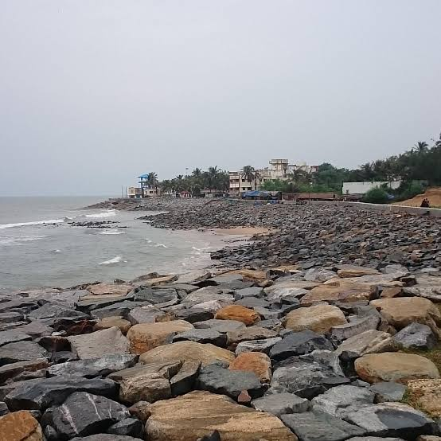
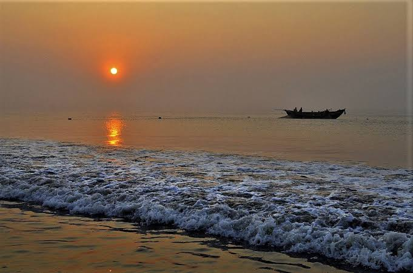
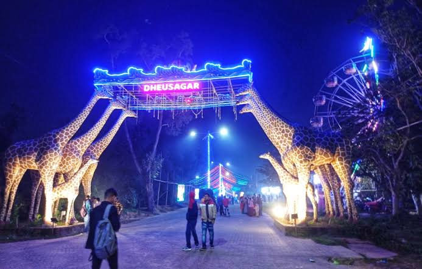
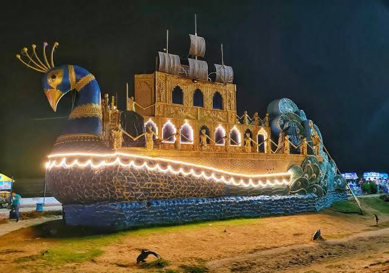
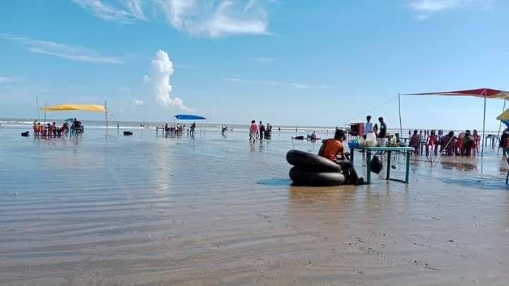
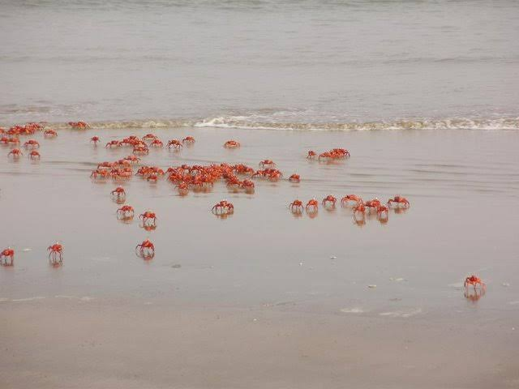
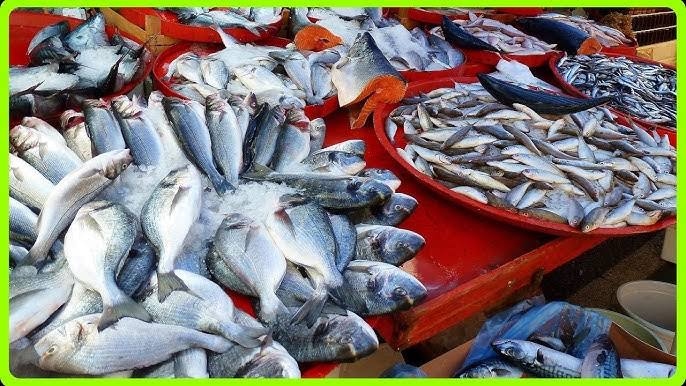
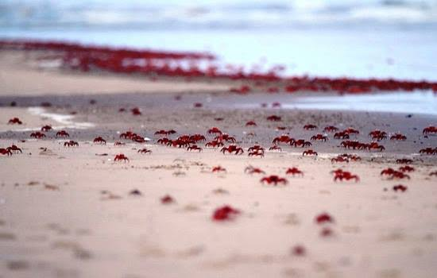
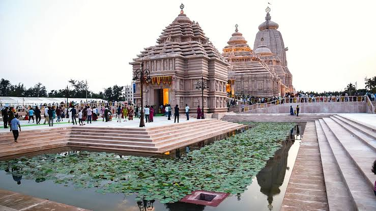
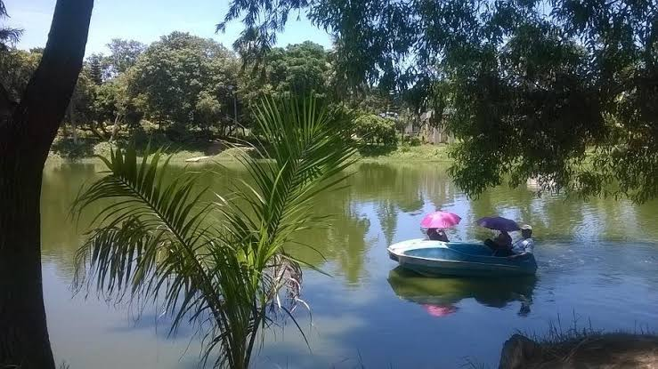

Advertisement
Discover Digha, West Bengal
Digha is a popular seaside resort town in the Purba Medinipur district of West Bengal, India. It is situated on the Bay of Bengal coast and is renowned for its shallow sand beaches, gentle waves, and picturesque sunsets. Digha serves as a perfect escape for tourists seeking relaxation and natural beauty. Historically known as Beerkul, Digha gained prominence during the British Raj as a tranquil retreat. Today, it offers a vibrant blend of tourism infrastructure and unspoiled natural charm, making it one of Eastern India's most beloved beach destinations, easily accessible from Kolkata and other major cities.
 Explore Digha's Enchanting Locations
Old Digha
Old Digha is the traditional heart of Digha, characterized by its protective rip-rap stone walls and the serene presence of casuarina trees. While its beach might be less sandy due to erosion, it offers a unique charm with its rocky stretches, ideal for quiet contemplation and stunning sunrise/sunset views. It's also home to bustling local markets.
Tourist Attractions:
- Mohona (Estuary): A picturesque spot where the Subarnarekha River meets the Bay of Bengal, offering a vibrant fish market and scenic views, especially during sunrise.
Location: Near the eastern end of Old Digha beach, Digha Mohana Rd, Digha, Purba Medinipur, West Bengal.
- Marine Aquarium and Regional Centre (MARC): Asia's largest in-built aquarium, showcasing a diverse collection of marine species, providing an educational and fascinating experience for all ages.
Location: Near Digha Mohona, Old Digha, Digha, West Bengal 721428.
- Digha Gate: An iconic welcome arch that serves as a landmark, signifying your arrival into the famous seaside town.
Location: On the main road entering Old Digha, Purba Medinipur, West Bengal.
- Biswa Bangla Park: A newer addition to Old Digha, offering a landscaped garden with the Biswa Bangla theme.
Location: Near Old Digha Sea Beach, Digha, West Bengal.
New Digha
New Digha is a more modern and well-planned extension of Digha, featuring a wider, cleaner, and less crowded beach ideal for leisurely strolls, sunbathing, and enjoying the calm sea. It offers a more developed infrastructure with various hotels and tourist amenities.
Famous Attractions:
- New Digha Beach: The main highlight, offering a serene environment with a gentle slope into the sea, perfect for swimming and relaxation. Vendors offer local snacks and souvenirs.
Location: New Digha, Digha, Purba Medinipur, West Bengal.
- Digha Science Centre & National Science Camp: An interactive science museum with engaging exhibits, a planetarium, and a 3D theatre, making learning fun for children and adults.
Location: Near New Digha Bus Stand, New Digha, Digha, West Bengal 721428.
- Amaravati Park: A beautifully landscaped park with lush greenery, a serene lake with boating facilities, and a popular ropeway offering panoramic views of the surroundings. It's a great spot for family picnics.
Location: JGF3+GC7, Unnamed Road, Chanpabani, New Digha, Digha, West Bengal 721428.
- Wonderland Kajal Dighi: An amusement park featuring a model toy train, various rides, and a calm lake, providing entertainment for all ages.
Location: Near New Digha Beach, Digha, West Bengal.
Dheusagar Park
Dheusagar Park, located in New Digha, is a burgeoning amusement and leisure park designed to provide a serene and enjoyable experience. It combines lush green nature with recreational facilities, making it a perfect spot for families and individuals looking for a peaceful escape by the sea.
Attractions:
- Amusement Rides: Features a variety of rides suitable for all age groups, adding an element of fun and excitement to your visit.
- Boating Facilities: Enjoy serene boat rides on the park's tranquil lake, offering a relaxing way to take in the surroundings.
- Toy Train: A delightful toy train ride that takes visitors on a tour of the park, particularly popular among children.
- Lush Greenery and Gardens: The park boasts beautifully maintained landscapes, vibrant gardens, and ample green space, perfect for leisurely walks, picnics, and unwinding amidst nature.
Location: JF8X+P8J, New Digha Sea Beach Rd, New Digha, Digha, West Bengal 721428.
 Udaipur Beach
Nestled on the border of West Bengal and Odisha, Udaipur Beach is often referred to as a "virgin beach" due to its untouched beauty and serene ambiance. It's characterized by its long stretches of sandy beach and dense casuarina groves, offering a tranquil escape from the crowds.
Attraction:
- Pristine Beach and Casuarina Groves: Ideal for peaceful walks, enjoying solitude, and picnicking amidst nature's calm. The red crabs often found here add to its unique appeal.
Location: Approximately 3 kilometers south of New Digha Beach, Purba Medinipur, West Bengal, close to the Odisha border.
Talsari Beach
Located in Odisha, just about 8 km from Digha, Talsari Beach is a captivating estuarine beach known for its serene beauty, the confluence of the Subarnarekha River with the Bay of Bengal, and its unique red crabs. The beach is fringed by swaying palm and casuarina trees.
Attraction:
- Red Crabs and Palm Fringed Beach: Witness thousands of tiny red crabs scurrying across the golden sands, creating a vibrant spectacle. The tranquil environment and lush greenery make it perfect for nature photography and peaceful strolls.
- Boat Rides: Local boats often take visitors across the river estuary for a closer look at the unique ecosystem.
Location: Baleswar district, Odisha, approximately 8 km from Digha Railway Station.
Digha Mohona
Digha Mohona is the captivating confluence point where the Champa River merges with the mighty Bay of Bengal. This spot is not just scenic but also a bustling hub of local life, particularly known for its vibrant fish market.
Attraction:
- Fish Market and Estuary View: Experience the lively atmosphere of the wholesale fish market where fresh catches are brought in daily. It's a great place to observe local fishing culture and sample fresh seafood. The estuary itself provides picturesque views, especially during sunrise.
Location: Digha Mohana Rd, Atili, Begundiha, Digha, West Bengal 721441. (Near the eastern end of Old Digha beach).
Tajpur
An emerging and relatively untouched beach destination, Tajpur is known for its remarkable tranquility, dense casuarina groves, and the fascinating sight of thousands of red crabs that carpet the beach during low tide. It offers a more secluded and peaceful alternative to the busier Digha beaches.
Attraction:
- Red Crab Beach and Serene Environment: The major draw is the pristine beach teeming with red crabs, offering a unique natural spectacle. It's ideal for those seeking solitude, long walks, and reconnecting with nature.
- Para-sailing and Water Sports: As it's developing, some water sports activities like para-sailing are becoming available.
Location: Approximately 17 km from Digha, Purba Medinipur, West Bengal. It's located on the Digha-Contai Road.
Digha Jagannath Mandir
This newly constructed temple is a significant spiritual landmark in Digha, designed as a replica of the famous Jagannath Temple in Puri, Odisha. It aims to provide spiritual solace and showcase magnificent architectural beauty.
Attraction:
- Spiritual Shrine and Architecture: A place of worship for devotees of Lord Jagannath, Subhadra, and Balabhadra. The temple's grand architecture is also a major draw, offering a glimpse of traditional Kalinga style.
Location: Shankar Mandal Road, New Digha Sea Beach Road, Digha New Township, West Bengal 721463 (Currently on Digha Marine Drive Road, near Nyaykali Kali Temple Road, is also mentioned).
Amaravati Park
Amaravati Park, located in New Digha, is a well-maintained and family-friendly park offering a refreshing green space. It's popular for its recreational facilities and serene environment, making it a great place to unwind after a day at the beach.
Attraction:
- Boating: Enjoy pleasant boat rides on the park's central lake.
- Toy Train: A charming toy train offers a fun ride around the park, especially loved by children.
- Ropeway: Offers an aerial view of the park and its surroundings, providing a unique perspective.
- Greenery and Play Areas: Lush lawns, colorful flowerbeds, and designated play areas make it ideal for family outings and relaxation.
Location: JGF3+GC7, Unnamed Road, Chanpabani, New Digha, Digha, West Bengal 721428 (Near New Digha Beach).
